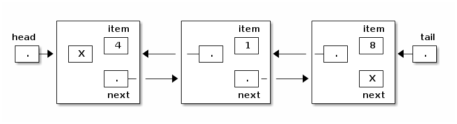
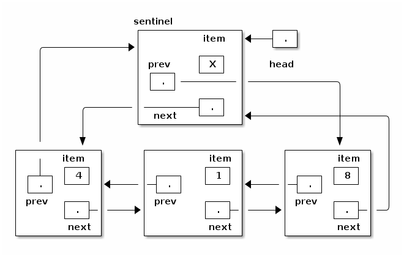

notes8
Table of Contents
Lecture 8
Today's reading: Goodrich & Tamassia, Section 3.3.
THE "public" AND "private" KEYWORDS
Thus far, we've usually declared fields and methods using the "public" keyword. However, we can also declare a field or method "private". A private method or field is invisible and inaccessible to other classes, and can be used only within the class in which the field or method is declared.
Why would we want to make a field or method private?
- To prevent data within an object from being corrupted by other classes.
- To ensure that you can improve the implementation of a class without causing other classes that depend on it to fail.
In the following example, EvilTamperer tries to get around the error checking code of the Date class by fiddling with the internals of a Date object.
public class Date { | public class EvilTamperer {
private int day; | public void tamper() {
private int month; | Date d = new Date(1, 1, 2006);
|
private void setMonth(int m) { | d.day = 100; // Foiled!!
month = m; | d.setMonth(0); // Foiled again!!
} | }
| }
public Date(int month, int day) { |
[Implementation with |
error-checking code here.] |
}
}
However, javac won't compile EvilTamperer, because the Date class has declared its vulnerable parts "private". setMonth is an internal helper method used within the Date class, whereas the Date constructor is a public part of the interface of the Date class. Error-checking code in the constructor ensures that invalid Dates are not constructed.
Here are some important definitions.
The interface of a class is a set of prototypes for public methods (and sometimes public fields), plus descriptions of the methods' behaviors.
An Abstract Data Type (ADT) is a class that has a well-defined interface, but its implementation details are firmly hidden from other classes. That way, you can change the implementation of a class without jeopardizing the programs that depend on it. The Date class is an ADT. We'll implement lots of ADTs this semester.
An invariant is a fact about a data structure that is always true (assuming the code is bug-free), no matter what methods are called by external classes. For example, the Date ADT enforces the invariant that a Date object always represents a valid date. An invariant is enforced by allowing access to certain fields only through method calls.
An ADT is often a good thing to aspire to. In most of your classes, you should declare all fields private, as well as helper functions meant only for internal use, so that you can maintain sensible invariants on your data structures.
However, not all classes are ADTs! Some classes are nothing more than data storage units, and do not need to enforce any invariants. In such classes, all fields may be declared public.
The SList ADT
Last lecture, I created an SList class to solve the problems of representing empty lists and inserting items at the beginning of a list. Today, I want to introduce another advantage of the SList class.
We want the SList ADT to enforce two invariants:
- An SList's "size" variable is always correct.
- A list is never circularly linked; there is always a tail node whose "next" reference is null.
Both these goals are accomplished by making sure that only the methods of the SList class can change the lists' internal data structures. SList ensures this by two means:
- The fields of the SList class (head and size) are declared "private".
- No method of SList returns an SListNode.
The first rule is necessary so that the evil tamperer can't change the fields and corrupt the SList or violate invariant (1). The second rule prevents the evil tamperer from changing list items, truncating a list, or creating a cycle in a list, thereby violating invariant (2).
DOUBLY-LINKED LISTS
As we saw last class, inserting an item at the front of a linked list is easy. Deleting from the front of a list is also easy. However, inserting or deleting an item at the end of a list entails a search through the entire list, which might take a long time. (Inserting at the end is easy if you have a `tail' pointer, as you will learn in Lab 3, but deleting is still hard.)
A doubly-linked list is a list in which each node has a reference to the previous node, as well as the next node.
class DListNode { | class DList {
Object item; | private DListNode head;
DListNode next; | private DListNode tail;
DListNode prev; | }
} |

DLists make it possible to insert and delete items at both ends of the list, taking constant running time per insertion and deletion. The following code removes the tail node (in constant time) if there are at least two items in the DList.
tail.prev.next = null; tail = tail.prev;
You'll need a special case for a DList with no items. You'll also need a special case for a DList with one item, because tail.prev.next does not exist. (Instead, head needs to be changed.)
Let's look at a clever trick for reducing the number of special cases, thereby simplifying our DList code. We designate one DListNode as a sentinel, a special node that does not represent an item. Our list representation will be circularly linked, and the sentinel will represent both the head and the tail of the list. Our DList class no longer needs a tail pointer, and the head pointer points to the sentinel.
class DList {
private DListNode head;
private int size;
}

The invariants of the DList ADT are more complicated than the SList invariants. The following invariants apply to the DList with a sentinel.
- For any DList d, d.head != null. (There's always a sentinel.)
- For any DListNode x, x.next != null.
- For any DListNode x, x.prev != null.
- For any DListNode x, if x.next == y, then y.prev == x.
- For any DListNode x, if x.prev == y, then y.next == x.
- A DList's "size" variable is the number of DListNodes, NOT COUNTING the sentinel (denoted by "head"), that can be accessed from the sentinel by a sequence of "next" references.
An empty DList is represented by having the sentinel's prev and next fields point to itself.
Here's an example of a method that removes the last item from a DList.
public void removeBack() {
if (head.prev != head) { // Do nothing if the DList is empty.
head.prev = head.prev.prev; // Sentinel now points to second-last item.
head.prev.next = head; // Second-last item now points to sentinel.
size--;
}
}
In Lab 4 and Homework 4, you'll implement more methods for this DList class.